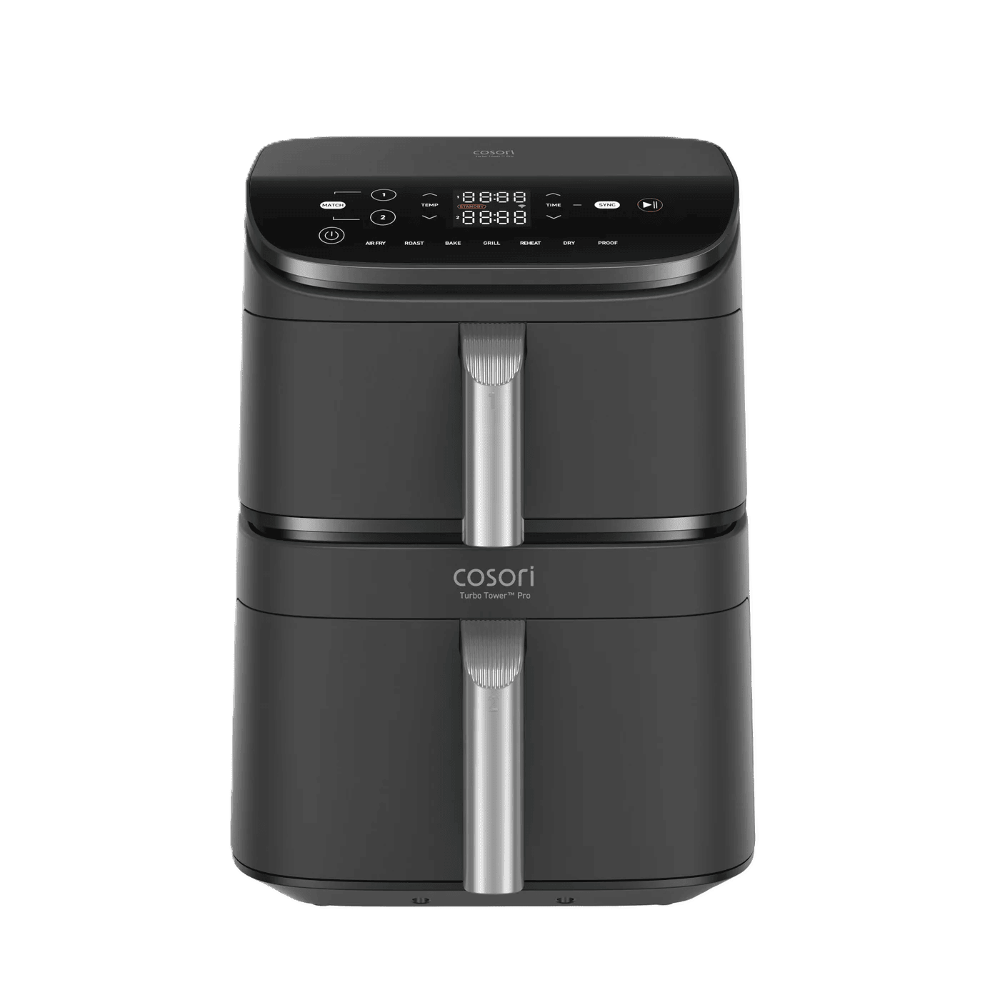

Keramikbeschichtung
Pflegeleichte Beschichtung für den Alltag
Die Keramikbeschichtung ist ein wichtiges Merkmal des Cosori Turbo Tower. Sie soll die Reinigung erleichtern, das Anhaften von Speisen reduzieren und im Alltag langlebig bleiben.
Keramikbeschichtung
Die Keramikbeschichtung ist ein wichtiges Merkmal des Cosori Turbo Tower. Sie soll die Reinigung erleichtern, das Anhaften von Speisen reduzieren und im Alltag langlebig bleiben.

Auf einen Blick
Pflegehinweis
Damit die Beschichtung möglichst lange gut bleibt, sollten keine Metallutensilien, harten Bürsten oder stark scheuernden Reiniger verwendet werden.
Praxiseindruck
Im täglichen Einsatz macht die Keramikbeschichtung einen hochwertigen Eindruck. Speisen wie Kartoffeln, Gemüse oder Hähnchen lösen sich nach dem Garen meist problemlos von der Oberfläche. Dadurch wird nur wenig zusätzliches Öl benötigt und auch empfindlichere Lebensmittel bleiben beim Herausnehmen weitgehend unbeschädigt.
Besonders positiv fällt die unkomplizierte Reinigung auf. Nach dem Abkühlen lassen sich leichte Rückstände normalerweise mit warmem Wasser, etwas Spülmittel und einem weichen Schwamm entfernen. Eingebrannte Speisereste sollten zunächst eingeweicht und nicht mit Kraft von der Oberfläche abgekratzt werden.
Für die Haltbarkeit ist eine schonende Behandlung entscheidend. Metallbesteck, harte Bürsten und scheuernde Reinigungsmittel können Kratzer verursachen und die Beschichtung langfristig beschädigen. Küchenhelfer aus Silikon, Holz oder hitzebeständigem Kunststoff sind deshalb die bessere Wahl.
Insgesamt erweist sich die Keramikbeschichtung im bisherigen Praxiseinsatz als pflegeleicht und alltagstauglich. Sie ist jedoch nicht unempfindlich und sollte nach jeder Nutzung vorsichtig gereinigt werden. Bei richtiger Pflege bleibt die Oberfläche länger glatt und behält ihre guten Antihafteigenschaften.
Stärken
Zu beachten